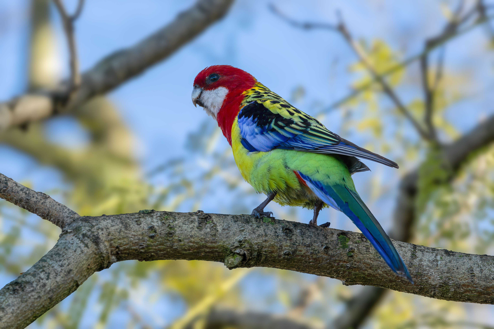

The Eastern Rosella is a colourful parrot of southeastern Australia, easily recognised by its red head and breast, white cheek patches, yellow-green body and bright blue shoulders. Its striking plumage makes it one of the most recognisable rosellas. Eastern Rosellas are often seen feeding on the ground, where they use their strong bills to collect seeds, grasses and other plant material. They can also climb through trees and feed on fruits, buds and flowers. The species has adapted well to human-modified environments and is commonly seen in farmland, parks, gardens and golf courses. It is somewhat similar to the Pale-headed Rosella, but the Eastern Rosella has a strongly red head and distinctive white cheek patches.